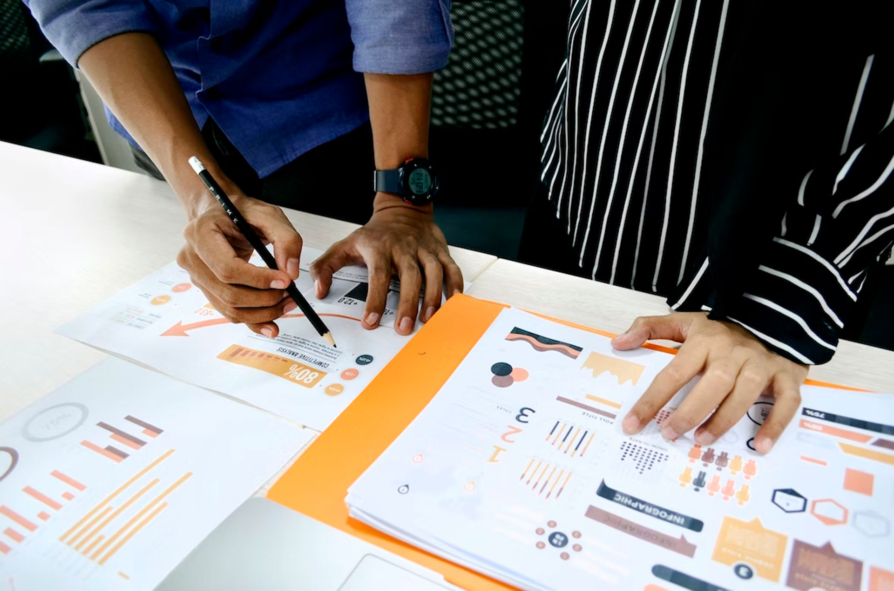

Determinamos las probabilidades de éxito para
desarrollos comerciales futuros, calculamos el
mercado potencial, las brechas de mercado, los m2 a
construir y el tenant mix ideal.
Alertamos a tiempo sobre la inviabilidad de nuevos
proyectos comerciales.
Estimamos los m2 adicionales para posibles
ampliaciones.
Definimos el ADN de la Marca y le ayudamos a crear
un camino de Valor Estratégico para el
reposicionamiento del Centro Comercial.
Inteligencia de Mercados
Estructuramos su Investigacion de Mercado y
conceptualizamos la metodología según su caso.
Estudios Cuantitativos: Encuestas F2F, Telefónicas,
Paneles Online, Mediciones de Tráfico, Perfil del Cliente.
Estudios Cualitativos: Etnografía, Entrevistas en
Profundidad, Sesiones de Grupo, Mystery shopper.
Expansión Comercial
Nuestros expertos en SITE SELECTION lo ayudan para
identificar las zonas geográficas ideales en donde
podría abrir sus nuevos puntos de venta, y los puntos
que debe reubicar para no canibalizar a otros.
Calculamos la demanda potencial de su producto, su
cuota de mercado y estimamos las ventas
probables.

Marca & Estrategia
Le ayudamos a formular Planes de Mercadeo exitosos,
segmentamos la data de clientes, estudiamos
comportamientos de compra y encontramos patrones
de consumo para que incremente sus ventas.
Estudiamos y entendemos la Esencia de su Marca desde
diferentes perspectivas y le guiamos para darle un
direccionamiento Estratégico & Creativo.
Desarrollo conceptual de la Marca + Key Visual.
Proyectos Inmobilarios
Estudios especializados para Constructoras y
Promotores de Proyectos de Vivienda, Oficinas y
Hoteles.
Metodología única en el mercado con la que
reconocidos promotores toman decisiones
fundamentales antes de lanzar sus proyectos
inmobiliarios al mercado.
Nuestros estudios le ayudan a definir los atributos y las
características ideales para un proyecto exitoso: precio,
tamaño, amenities, entre otros.
Planeación Estrategica
Con nuestro lema “Planeando para Ganar” y en medio de conversaciones colectivas inteligentes nuestro grupo de expertos le ayuda a identificar los aspectos claves para encontrar su verdadera Propuesta de Valor.
Nuestros talleres lúdicos son una gran herramienta y orientan al equipo de su empresa para encontrar y definir una posición única en el mercado, algo que lo alejará de su competencia.